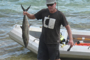
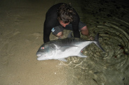
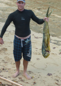

Fishing
This place is a fisherman’s paradise. Hunga and the surrounding Vava’u area offers a dynamic mix of fishing options, fishing techniques, and an array of different species to target. You could fish all day if you wanted, your only problem being what style of fishing to do and what fish to target.
inside the lagoon
 {kind=link}
{kind=link}
Inside the lagoon is great for lure fishing, including soft plastics, slow trolled bibbed lures, spinning lures, and probably any other lure you try.
Trevally are often seen chasing baitfish and hanging around the moorings and put up a great fight once hooked. The Blue Fin Trevally also makes great sashimi.
Barracuda are often seen right in at the shallows on ‘One’atea beach feeding on bait fish and can be targeted from the shore or even the deck if you feel like it! Small silver lures in the mornings seem to be a great time for targeting these fish and they are great to eat.
Night fishing has also proved fruitful and exciting. You never know what may be lurking around hungry for a luminescent soft plastic, or cube of bait. There are some crazy looking fish in this lagoon!
rock fishing
There are many spots as yet unexplored for this style of fishing. Softbait fishing at the ‘False Entrance’ at low tide is a 5 minute walk down the beach from ‘One’atea, and has proved successful for snapper and other unnamed species. What has been the real teaser though are the large dark shapes that cruise up and down the area amongst the reef, but have not taken anything the writer has thrown at it…yet!
popper fishing
Throwing poppers from Pēpē (the small boat) has proved lots of fun, and is still in its exploratory stages. Reef edges can be targeted in and around the blue lagoon or on a calm day outside the entrance amongst the wash.
gamefishing
{kind=link}
Straight outside the Hunga lagoon the ocean drops down to an incredible 500m deep within 1km from shore. Frequenting this area in good numbers are Blue Marlin, Skipjack Tuna, Yellow Fin Tuna, Sailfish, Mahi Mahi and Wahoo. Other species such as Black Marlin, Striped Marlin, Shortbill Spearfish, Spanish Mackeral and Dogtooth Tuna are also caught. The main method to target these species is by trolling lures, with live-baiting becoming increasingly popular.
Some of these species, Yellow Fin Tuna, Mahi Mahi and Wahoo can be targeted in the small boat Pēpē outside the lagoon on a calm day. But to really experience this fishing to its full extent why not book a day with one of Vava’u’s most successful and respected skippers – Steve Campbell, aboard his vessel Reel Addiction. Steve is the current holder of over 100 current National and Club line class records together with 32 All Tackle Records.
Steve is based at Ika lahi lodge, bar and restaurant, about 150m down the beach.
other
Boat fishing is also available with our village host on his boat. For this you will need all of your own gear. This could be used for bottom fishing, live-baiting, trolling close in, or softbaiting. It is suggested you talk to the village host on arrival if you wish to do this so that a plan can be organised and scheduled.
The General Store in Neiafu stocks a good supply of fishing gear if you need to re-stock while in Vava’u.
{kind=link}
{kind=link}
{kind=link}